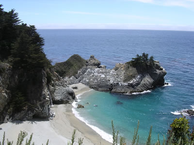
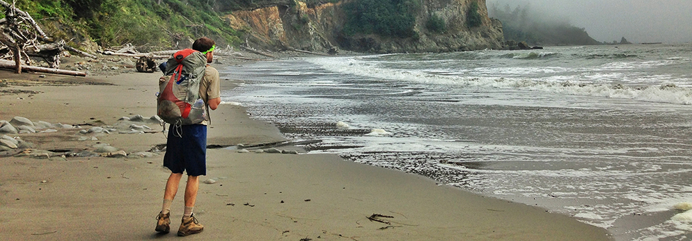

A little closer to nature
At Pacific Trails Resort, a peaceful coastal escape comes with the comforts of a private yurt, thoughtful hospitality, and the Pacific just beyond your door.
Wake to a cooked-to-order breakfast, spend the day exploring the California North Coast, then settle in for an ocean-view dinner. However you like to unwind, there is room here to slow down and enjoy it.

Stay comfortably
Our cozy yurts blend comfort with the beauty of the coast. Each space includes a queen bed, electricity, and warm lighting for restful evenings. Enjoy hot and cold running water, plus beautiful views in every season.
Explore the yurts & packages
Find your adventure
Step outside and discover miles of scenic coastal trails. Join a guided hike, paddle along the shoreline, or watch birds at sunrise with ocean views. Every day offers a new way to explore the coast.
See activities and coastal views
Plan a visit
Planning your getaway is simple and stress free. We are located at 12010 Pacific Trails Road in Zephyr, California, near breathtaking coastline views. Call with any questions and our team will help you get started.
Make a reservation